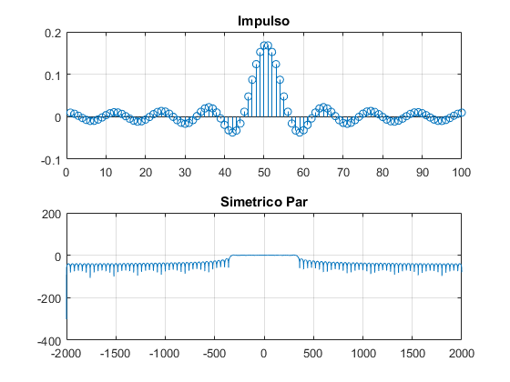

Contents
clear all clc %frecuencias f1=100; f2=200; f3=300; %frecuencia portadora fc=800; %frecuencia muestreo fs=4000; %periodo de muestreo Ts=1/fs; m=0; %w respectivas con su frecuencia y lo queremos pasar a discretas w1=2*pi*(f1*Ts); w2=2*pi*(f2*Ts); w3=2*pi*(f3*Ts); w4=2*pi*(fc*Ts); %intervalo de n n=-100:1:100; % 1) m=5*cos(w1*n)+10*cos(w2*n)+2*cos(w3*n); % 2) c=cos(w4*n); % 3) M=fftshift(fft(m,1000));% Se quiere ver el espectro con mas punto por eso el 1000 f=linspace(-fs/2,fs/2,1000); C=fftshift(fft(c,1000)); % 4) s=m.*c; %señal modulada S=fftshift(fft(s,1000)); %magnitud de s(n) % 5) r=s.*c; R=fftshift(fft(r,1000)); %Graficas figure(1) subplot(4,2,1); stem(n,m) title('Señal m(n)'); grid; subplot(4,2,3); stem(n,c) title('Señal c(n)'); grid; subplot(4,2,2); plot(f,abs(M)) %magnitud de m(n) title('Espectro de potencia M(w)'); grid; subplot(4,2,4); plot(f,abs(C)) %magnitud de c(n) title('Espectro de potencia C(w)'); grid; subplot(4,2,5); stem(n,s) title('s(n)=m(n)*c(n)'); grid; subplot(4,2,6); plot(f,abs(S)) title('Espectro de potencia S(w)'); grid; subplot(4,2,7); stem(n,r) title('r(n)=s(n)*c(n)'); grid; subplot(4,2,8); plot(f,abs(R)) title('Espectro de potencia R(w)'); grid;
%Aqui haremos las modulaciones con el filtro Simetrico %6) M1=100; H = [ones(1,9) zeros(1,41)]; %coeficientes A=ank(M1); %matriz h=inv(A)*H'; %multiplicamos transpuesta de A con H h = [h;flipud(h)]; %respuesta al impulso pasa bajas w=-pi:0.001:pi; figure(2) subplot(2,1,1) stem(h) title('Impulso'); grid Hr=0; for k=0:1:M1/2-1 Hr= Hr+2*h(k+1)*cos(((M1-1)/2-k)*w); %se suman los cofecientes end subplot(2,1,2) plot(w*4000./(2*pi),20*log10(abs(Hr))) title('Simetrico Par'); grid figure(3) subplot(2,2,1); plot(f,abs(R)) title('Espetro de potencia R(w)'); grid subplot(2,2,3); plot(w*4000./(2*pi),20*log10(abs(Hr))) title('Filtro Simetrico Par'); grid %7) m2=conv(h,r); nn=linspace(-100,100,length(m2)); M2=fftshift(fft(m2)); ff=linspace(-fs/2,fs/2,length(M2)); figure(3) subplot(2,2,2); stem(nn,m2) title('Convolución m2=h*r'); grid subplot(2,2,4); plot(ff,abs(M2)) title('Magnitud del espectro de la señal recuperada'); grid %8) figure(4) n1=-149:150; c1=cos(w4*n1); M1=fftshift(fft(m2,1000)); f=linspace(-fs/2,fs/2,1000); C1=fftshift(fft(c1,1000)); s1=m2.*c1; S1=fftshift(fft(s1,1000)); subplot(3,2,1); stem(n1,m2); title('m2(n)'); grid subplot(3,2,3); stem(n1,c1); title('c1(n)'); grid subplot(3,2,2); plot(f,abs(M1)); title('Espectro M2(w)'); grid subplot(3,2,4); plot(f,abs(C1)); title('Espectro C1(w)'); grid subplot(3,2,5); stem(n1,s1); title('s1(n)'); grid subplot(3,2,6); plot(f,abs(S1)); title('Espectro S1(w)'); grid
Antisimetrico
9)
Mimpar=101; Him=[zeros(1,12) ones(1,8) zeros(1,30)]; %coeficientes B=bnk(Mimpar); %se resuelve sist ecuaciones h2=inv(B)*Him'; %multiplicamos transpuesta de B con Him h2=[h2;0;-flipud(h2(1:((Mimpar-3)./2)+1))]; %respuesta al impuslo pasa bandas figure(5) subplot(2,1,1); stem(h2) title('Impulso');grid Hr2=0; for j=0:1:(Mimpar-3)/2 Hr2=Hr2+2*h2(j+1)*sin(((Mimpar-1)/2-j).*w); end subplot(2,1,2); plot(w.*4000./(2*pi),20*log10(abs(Hr2)))%normalizar title('Antisimetrico Impar'); axis([-2000 2000 -100 10]); grid %prueba Aqui se analiza la forma de que debe de ir el vector Him, cada %lobulo significa un cero y queremos que los unos que es la parte %horizontal este entre 500 y ochocientos por eso esta el vector deifinido %de esa forma y aqui se puede comprobar figure(6) subplot(2,2,1); plot(f,abs(S)); title('Espectro de frecuencia S(w)'); grid subplot(2,2,3); plot(w.*4000./(2*pi),20*log10(abs(Hr2)))%normalizar title('Filtro Antisimetrico Impar'); grid % 10) s2=conv(h2,s); s2=s2(50:250); S2=fftshift(fft(s2, 1000)); fff=linspace(-fs/2,fs/2,length(S2)); subplot(2,2,2); stem(n,s2) title('Convolución s2=s(n)*h2(n)'); grid subplot(2,2,4); plot(fff,abs(S2)) title('Magnitud del espectro de la señal recuperada');grid
Valor Impar
11)
%aqui se repite el paso 5 r2=s2.*c; R2=fftshift(fft(r2,1000)); figure(7) subplot(2,1,1); stem(n,r2); title('r2=s2*c2'); grid subplot(2,1,2); plot(f,abs(R2)); title('Espectro R(w)'); grid %aqui se repite el paso 6 figure(8) subplot(2,1,1); stem(h); title('Impulso') subplot(2,1,2); plot(w*4000./(2*pi),20*log10(abs(Hr))); title('Simetrico par') %aqui se repite el paso 7 m3=conv(h,r2); n2=linspace(-100,100,length(m3)); M3=fftshift(fft(m3, 1000)); fff=linspace(-fs/2,fs/2,length(M3)); figure(9) subplot(2,1,1); stem(n2,m3); title('Convolución m3=h*r'); grid subplot(2,1,2); plot(fff,abs(M3)); title('Magnitud del espectro de la señal recuperada');grid